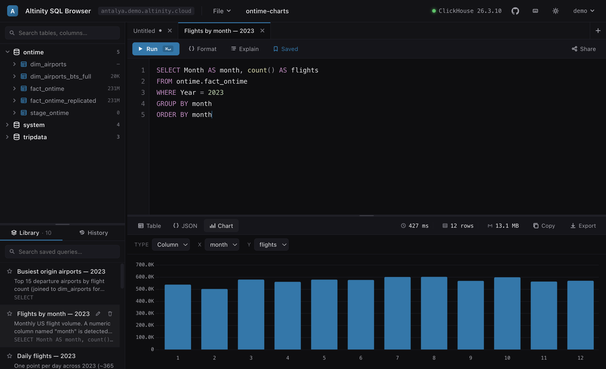
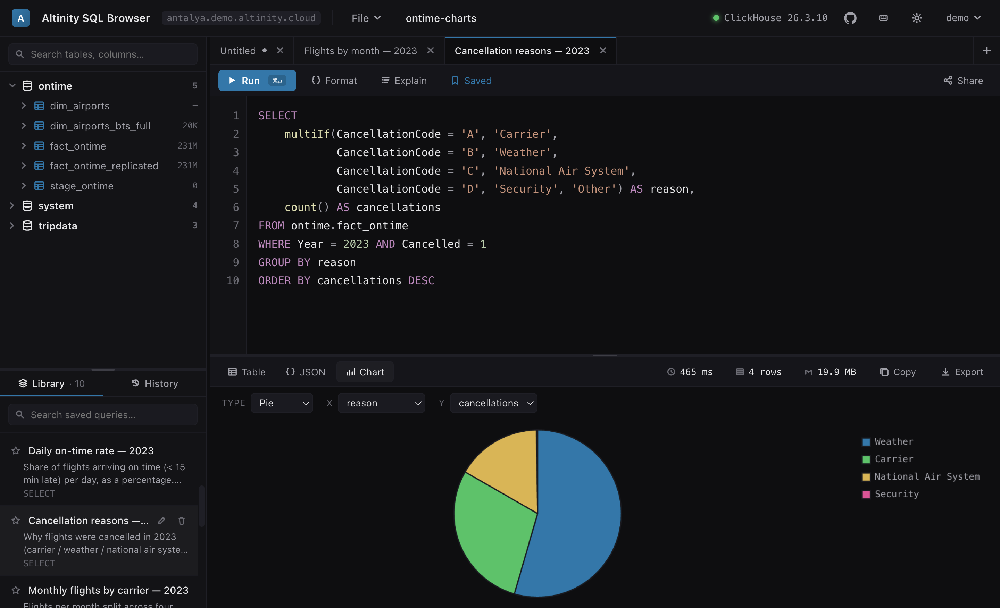
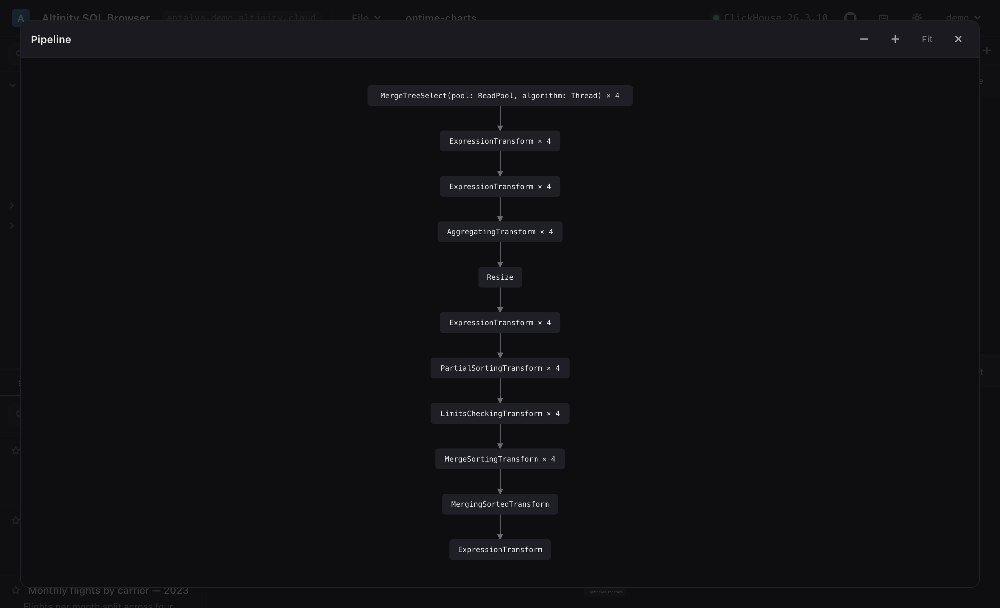
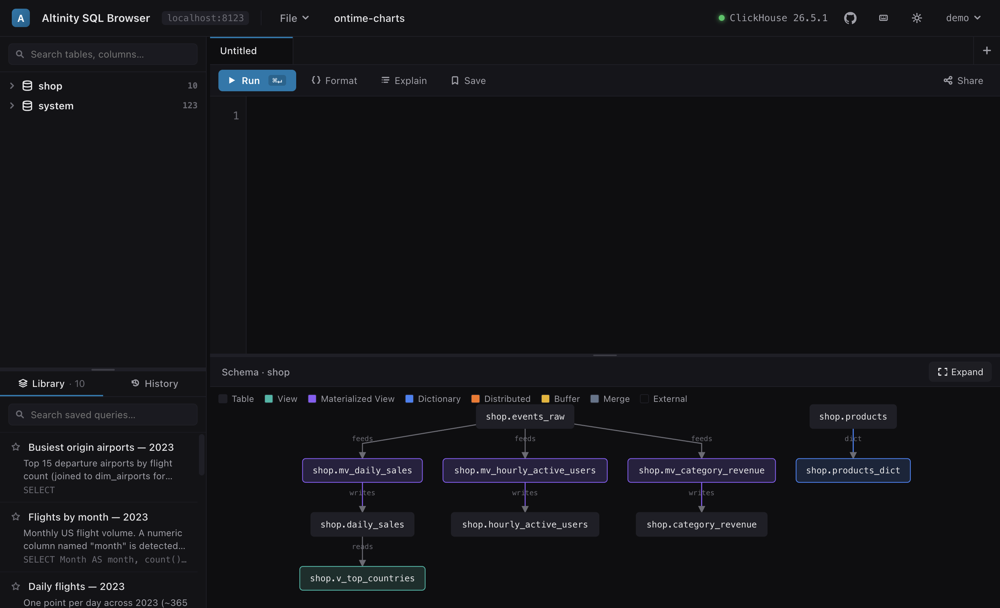
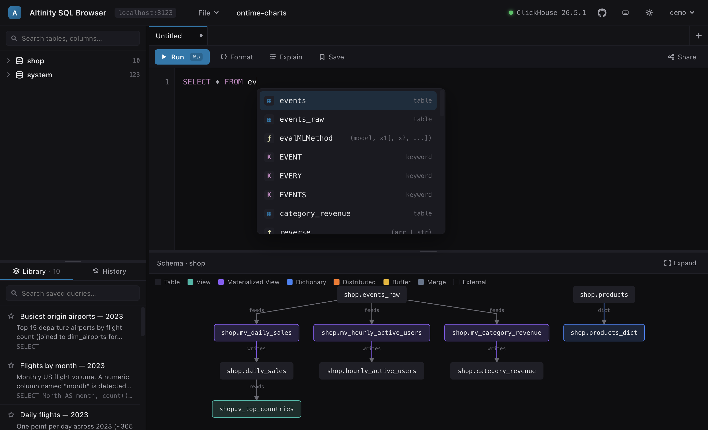

A custom editor, rich result views, query plans you can see, and a map of how your tables connect — all without a single third-party request.
Every result set switches between a sortable table, raw JSON, and a chart — without re-running. The chart view auto-detects axis roles (a date becomes a time series, a category becomes bars) and lets you override type, X, Y and series.

A small categorical breakdown becomes a pie with a legend; a time series becomes a line. The same result is one click away from a clean table with sortable, type-aware columns and live row/byte/time stats.

One Explain click gives five views — Explain, Indexes, Projections, Pipeline and
Estimate. The Pipeline view renders EXPLAIN PIPELINE graph as a real
boxes-and-arrows DAG you can pan, zoom and open fullscreen.

Drag a database or table onto the results pane to trace its data flow: source tables feeding materialized views that write to aggregates, dictionaries pulling from tables, and views reading downstream — colour-coded by engine with feeds, writes, reads and dict edges. Open it fullscreen to drag nodes (with undo/redo) and click any node for its columns, keys and DDL.

The editor reads system.keywords, system.functions and
your schema once per connection, so completion, highlighting and signature help match the exact
ClickHouse version you're on — and never fire a query on the keystroke path.

A filterable tree of databases → tables → columns with engines and row counts. Double-click to insert names; drag onto the editor or the results pane.
Name, describe and star queries; search them; import/export the whole library as JSON, Markdown or SQL. A non-persistent history tracks recent runs.
Encode a query (and its chart config) into a URL — open it and land on the same query. Zero server-side state.
Results stream in with a live progress bar and row/byte/time counters. Cancel a running query and keep the partial output.
Multiple query tabs, each with its own editor, result view and chart config. Resizable editor / sidebar split.
A polished design-token palette in both themes, with native OS fonts — no web-font downloads.
Google, Auth0, Okta and friends — Authorization-Code + PKCE, discovered from /.well-known/openid-configuration. The login screen can offer several providers.
HTTP Basic username/password for clusters without OAuth, including username-only connect for demo clusters. Tokens and credentials live only in sessionStorage.